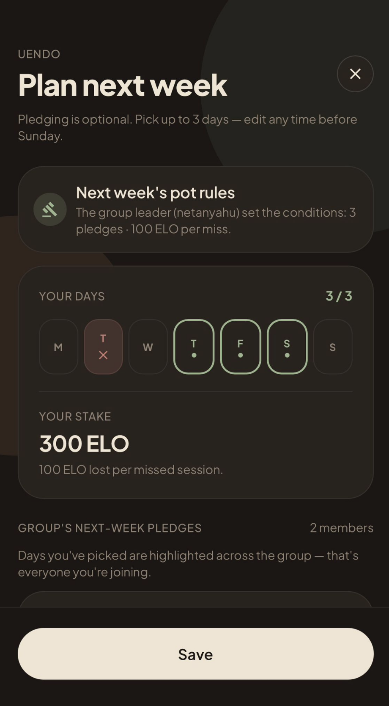
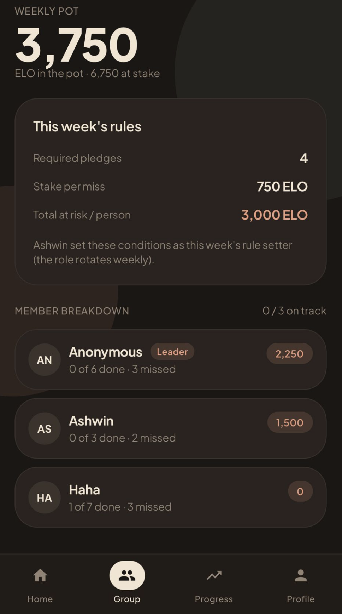
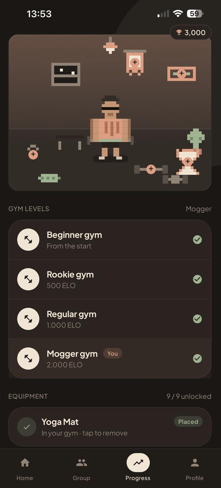

“Me and my mates always said we'd get into the gym but we just kept flaking on each other. I wanted it, but on a rainy day I'd talk myself out of it. Now, I open the app on a Sunday and see exactly what days my friends have pledged for the week. Knowing we’re all locked in changes everything. The weekly pot means I actually follow through and I'm not letting the group, or my £5, down. Plus, seeing where I stand on the squad leaderboard gives me that extra push when I’m tired. Three months in, going is just what we do now. GymJam turned our intentions into a habit.” Matt, 22 · 3rd year Imperial student
Since my members started using GymJam, I've seen our attendance climb in a way I've never seen before. People who used to drop off after a few weeks are showing up consistently, and they're genuinely happier for it. Watching them stay motivated and transform their lives has been the most rewarding part of managing this gym.
Priya, 26 · Manager at The Gym Group Acton
Make fitness work with your friends not against your willpower.

Plan Week
The Pot
GymSpaceUniversity is where the gym habit often starts, yet it is also where it frequently dies. Students sign up with friends, but without structured accountability, initial motivation fails. Data shows 50% of new members drop out within 8 weeks, and 63% of memberships go completely unused wasting £503 million in the UK in 2025.
GymJam intervenes before friend groups flake. By making weekly fitness pledges transparent to the squad and introducing small loss aversion stakes via the Group Pot, skipping a workout means letting your friends down and losing your money. We replace fragile willpower with ironclad social accountability turning flaky intentions into lifelong health habits.